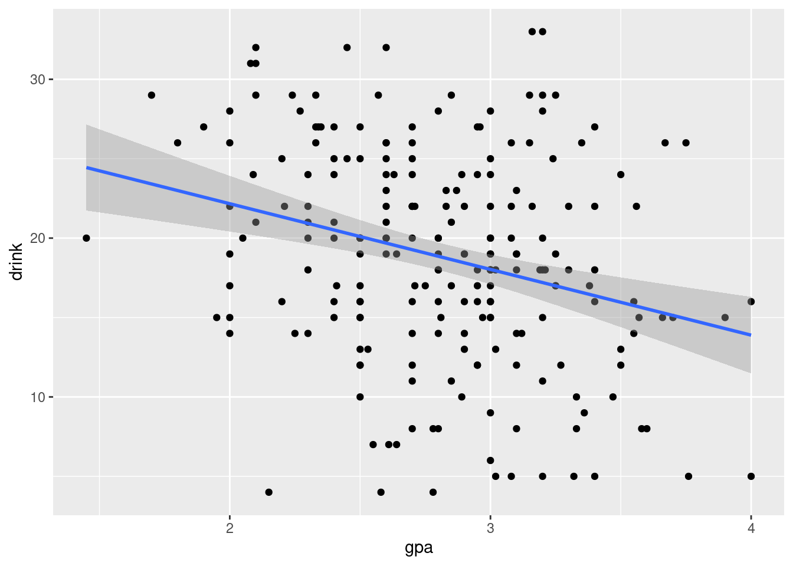

── Attaching core tidyverse packages ──────────────────────── tidyverse 2.0.0 ──
✔ dplyr 1.1.4 ✔ readr 2.1.5
✔ forcats 1.0.0 ✔ stringr 1.5.1
✔ ggplot2 3.5.0 ✔ tibble 3.2.1
✔ lubridate 1.9.3 ✔ tidyr 1.3.1
✔ purrr 1.0.2
── Conflicts ────────────────────────────────────────── tidyverse_conflicts() ──
✖ dplyr::filter() masks stats::filter()
✖ dplyr::lag() masks stats::lag()
ℹ Use the conflicted package (<http://conflicted.r-lib.org/>) to force all conflicts to become errors
9.1 Simpson’s paradox
The data set gdp2019 contains the GDP per capita in current prices for 142 countries in 2019. In addition, the variable spending shows the government spending in these countries as a share (in percent) of GDP.
Rows: 198 Columns: 4
── Column specification ────────────────────────────────────────────────────────
Delimiter: ","
chr (1): country
dbl (3): year, gdppc, spending
ℹ Use `spec()` to retrieve the full column specification for this data.
ℹ Specify the column types or set `show_col_types = FALSE` to quiet this message.
Create a scatterplot for the two variables and add the estimated regression line for the model
Call:
lm(formula = gdppc ~ gdppc_gr + spending, data = gdp2019)
Residuals:
Min 1Q Median 3Q Max
-21965 -2318 -311 1100 60058
Coefficients:
Estimate Std. Error t value Pr(>|t|)
(Intercept) -144.39 2593.15 -0.056 0.956
gdppc_grMedium-low 1308.32 2811.85 0.465 0.642
gdppc_grMedium-high 5835.94 2784.61 2.096 0.038 *
gdppc_grHigh 18460.21 3051.44 6.050 1.33e-08 ***
gdppc_grVery high 51920.69 3082.84 16.842 < 2e-16 ***
spending 44.80 55.91 0.801 0.424
---
Signif. codes: 0 '***' 0.001 '**' 0.01 '*' 0.05 '.' 0.1 ' ' 1
Residual standard error: 8518 on 136 degrees of freedom
Multiple R-squared: 0.8386, Adjusted R-squared: 0.8327
F-statistic: 141.4 on 5 and 136 DF, p-value: < 2.2e-16
Plot the estimated regression lines
gdp2019 %>%ggplot(aes(x = spending, y = gdppc, color = gdppc_gr)) +geom_point() +geom_abline(intercept =c(-144.39, 1308.32, 5835.94, 18460.21, 51920.69),slope =44.80,alpha =0.5 )
Very often we want test the hypothesis that a certain subset of the coefficients are simultaneously equal to zero. This is called a joint hypothesis.
In our example we could test the hypothesis that the coefficients of Med Low, Med High, High and Very High are all equal to zero. This is equivalent to testing if the average of gdppc is the same in all groups.
The test is called an F-test and is based on the ratio of the sum of squared errors of the restricted model and the sum of squared errors of the unrestricted model.
The restricted model is the one where the coefficients of Med Low, Med High, High and Very High are all equal to zero.
The unrestricted model is the one where all coefficients are estimated.
Linear hypothesis test
Hypothesis:
gdppc_grMedium-low - gdppc_grMedium-high = 0
Model 1: restricted model
Model 2: gdppc ~ 1 + gdppc_gr
Res.Df RSS Df Sum of Sq F Pr(>F)
1 138 1.0309e+10
2 137 9.9146e+09 1 394273995 5.4481 0.02104 *
---
Signif. codes: 0 '***' 0.001 '**' 0.01 '*' 0.05 '.' 0.1 ' ' 1
9.2 Interaction effect
# Load the datastu <-read.csv("https://raw.githubusercontent.com/febse/data/main/econ/drinking.csv") %>%mutate(sex =ifelse(male ==1, "Male", "Female") )# Print the first few rowsstu %>%head()
male drink gpa malegpa sex
1 1 5 3.20 3.20 Male
2 0 9 3.00 0.00 Female
3 1 29 2.85 2.85 Male
4 0 22 NA NA Female
5 0 19 NA NA Female
6 1 19 NA NA Male
stu %>%ggplot(aes(x=gpa, y=drink)) +geom_point() +geom_smooth(method=lm)
`geom_smooth()` using formula = 'y ~ x'
Warning: Removed 25 rows containing non-finite outside the scale range
(`stat_smooth()`).
Warning: Removed 25 rows containing missing values or values outside the scale range
(`geom_point()`).

m1 <-lm(drink ~ gpa, data = stu)m1 %>%summary()
Call:
lm(formula = drink ~ gpa, data = stu)
Residuals:
Min 1Q Median 3Q Max
-17.5459 -4.4426 0.1095 4.5977 15.7996
Coefficients:
Estimate Std. Error t value Pr(>|t|)
(Intercept) 30.444 2.726 11.17 < 2e-16 ***
gpa -4.138 0.958 -4.32 2.38e-05 ***
---
Signif. codes: 0 '***' 0.001 '**' 0.01 '*' 0.05 '.' 0.1 ' ' 1
Residual standard error: 6.48 on 216 degrees of freedom
(25 observations deleted due to missingness)
Multiple R-squared: 0.07952, Adjusted R-squared: 0.07526
F-statistic: 18.66 on 1 and 216 DF, p-value: 2.382e-05
m2 <-lm(drink ~ sex + gpa, data = stu)m2 %>%summary()
Call:
lm(formula = drink ~ sex + gpa, data = stu)
Residuals:
Min 1Q Median 3Q Max
-15.4888 -3.6180 0.7404 4.7767 13.6010
Coefficients:
Estimate Std. Error t value Pr(>|t|)
(Intercept) 26.9125 2.7702 9.715 < 2e-16 ***
sexMale 3.5358 0.8650 4.088 6.15e-05 ***
gpa -3.4529 0.9401 -3.673 0.000303 ***
---
Signif. codes: 0 '***' 0.001 '**' 0.01 '*' 0.05 '.' 0.1 ' ' 1
Residual standard error: 6.257 on 215 degrees of freedom
(25 observations deleted due to missingness)
Multiple R-squared: 0.1459, Adjusted R-squared: 0.138
F-statistic: 18.36 on 2 and 215 DF, p-value: 4.336e-08
m3 <-lm(drink ~ sex * gpa, data = stu)m3 %>%summary()
Call:
lm(formula = drink ~ sex * gpa, data = stu)
Residuals:
Min 1Q Median 3Q Max
-15.8980 -3.6964 0.7065 4.7208 13.3138
Coefficients:
Estimate Std. Error t value Pr(>|t|)
(Intercept) 28.5221 3.7396 7.627 7.77e-13 ***
sexMale 0.1488 5.3481 0.028 0.978
gpa -4.0112 1.2818 -3.129 0.002 **
sexMale:gpa 1.2121 1.8886 0.642 0.522
---
Signif. codes: 0 '***' 0.001 '**' 0.01 '*' 0.05 '.' 0.1 ' ' 1
Residual standard error: 6.265 on 214 degrees of freedom
(25 observations deleted due to missingness)
Multiple R-squared: 0.1475, Adjusted R-squared: 0.1356
F-statistic: 12.35 on 3 and 214 DF, p-value: 1.763e-07
9.3 Polynomial regression
In the following we will simulate 100 observations from the following model
y_i = 2 + x_i + x^2 + e_i, e_i \sim N(0, 1)
## Create the simulated samplesim_n <-100poly_dt <-tibble(x =runif(n = sim_n, min =-4, max =3),y =2+ x + x^2+rnorm(n = sim_n, mean =0, sd =1))
Plot x and y (scatterplot)
poly_dt %>%ggplot(aes(x = x, y = y)) +geom_point()